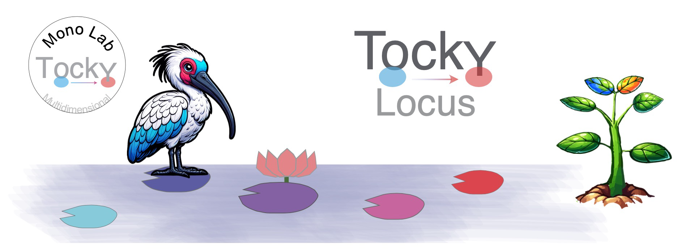

Author: Dr. Masahiro Ono
Date: 16 March 2026
Introduction
TockyLocus is an R package for biologically grounded, reproducible analysis of Timer Angle data from flow cytometric Fluorescent Timer experiments. Built to work downstream of TockyPrep, it implements the validated five-locus Tocky Locus framework for discretizing Timer Angle into interpretable transcriptional states, together with visualization and statistical analysis tools.
Why TockyLocus?
Fluorescent Timer proteins report transcriptional history through time-dependent maturation from blue to red fluorescence. After preprocessing and trigonometric transformation, Timer fluorescence can be represented by Timer Angle and Timer Intensity. However, Timer Angle is continuous and often highly skewed, making arbitrary gating, quadrant analysis, or MFI-based summaries insufficient for robust biological interpretation. TockyLocus addresses this by categorizing Timer Angle into biologically defined loci for quantitative comparison.
The Five Tocky Loci
The default TockyLocus framework partitions Timer Angle into five biologically defined loci:
-
New: 0°
-
NP-t (New-to-Persistent transitioning): >0° to 30°
-
Persistent: >30° to 60°
-
PA-t (Persistent-to-Arrested transitioning): >60° to <90°
- Arrested: 90°
These loci are anchored to key biological states. Very low Timer Angles correspond to newly expressing cells, angles around 45° reflect sustained transcription, and angles near 90° indicate historical expression without recent transcription. :contentReferenceoaicite:8
Why Five Loci?
In the published evaluation, categorization schemes from 3 to 7 loci were compared using simulated and experimental datasets from Nr4a3-Tocky and Foxp3-Tocky systems. While four loci were minimally sufficient for robust detection, the five-locus model emerged as the most effective overall because it preserves the biologically important Persistent region around 45° while maintaining strong statistical robustness. Excessive segmentation can create sparse bins and reduce interpretability, especially for lower cell numbers. :contentReferenceoaicite:9
Workflow
TockyLocus is designed to be used after preprocessing with TockyPrep:
-
Timer Thresholding to define Timer-positive cells and exclude autofluorescence
-
Timer Normalization to correct blue/red channel bias
-
Trigonometric Transformation to generate Timer Angle and Timer Intensity
- Tocky Locus categorization and downstream visualization/statistics in TockyLocus
Main capabilities
TockyLocus provides:
-
Data categorization using the five Tocky loci
-
QC visualization of loci on Timer fluorescence plots
-
Visualization of temporal dynamics using locus-wise plots
-
Visualization for group comparisons
- Statistical analysis methods for locus percentages :contentReferenceoaicite:11
Statistical analysis
TockyLocus supports multiple approaches for analysing locus percentages, including:
- Wilcoxon rank-sum / Mann–Whitney tests
- Arcsine square root transformation followed by parametric testing where appropriate
- Logit transformation followed by parametric testing where appropriate
- Multiple testing correction, with Benjamini–Hochberg FDR as the default approach.
Availability
- TockyLocus is freely available for distribution via GitHub:
Link to the repository: TockyLocus on GitHub
Installation
To begin using TockyLocus, install the package from GitHub using the following command:
# Install TockyLocus from GitHub
devtools::install_github("MonoTockyLab/TockyLocus")Citation
If you use TockyLocus in your work, please cite:
Ono M. TockyLocus: quantitative analysis of flow cytometric fluorescent timer data in Nr4a3-Tocky and Foxp3-Tocky mice. Biology Methods and Protocols. 2025;10(1):bpaf060. doi:10.1093/biomethods/bpaf060.
BibTeX Entry
@Article{,
title = {TockyLocus: quantitative analysis of flow cytometric fluorescent timer data in Nr4a3-Tocky and Foxp3-Tocky mice},
author = {Masahiro Ono},
journal = {Biology Methods and Protocols},
year = {2025},
volume = {10},
number = {1},
pages = {bpaf060},
doi = {10.1093/biomethods/bpaf060},
url = {https://doi.org/10.1093/biomethods/bpaf060},
}The Ono Lab (MonoTockyLab)

The Masahiro Ono Lab (MonoTockyLab) develops experimental and computational approaches to study immune cell dynamics, with a particular focus on the temporal regulation of gene expression in T cells.
The lab is known for the development of Tocky (Timer of cell kinetics and activity), a platform that uses Fluorescent Timer proteins to analyse transcriptional and signalling dynamics in vivo at single-cell resolution. Our research integrates mouse genetics, immunology, flow cytometry, single-cell omics, and computational modelling.
Current research directions include:
- cancer immunology and immunotherapy
- temporal mechanisms of T cell activation, differentiation, and tolerance
- Foxp3 transcriptional dynamics and their regulation in vivo
- computational methods for time-resolved single-cell analysis, including CanonicalTockySeq
Principal Investigator: Dr Masahiro Ono, Reader in Immunology at Imperial College London.
Dr Ono is the creator of Tocky, spanning both its transgenic reporter systems and associated analytical frameworks.